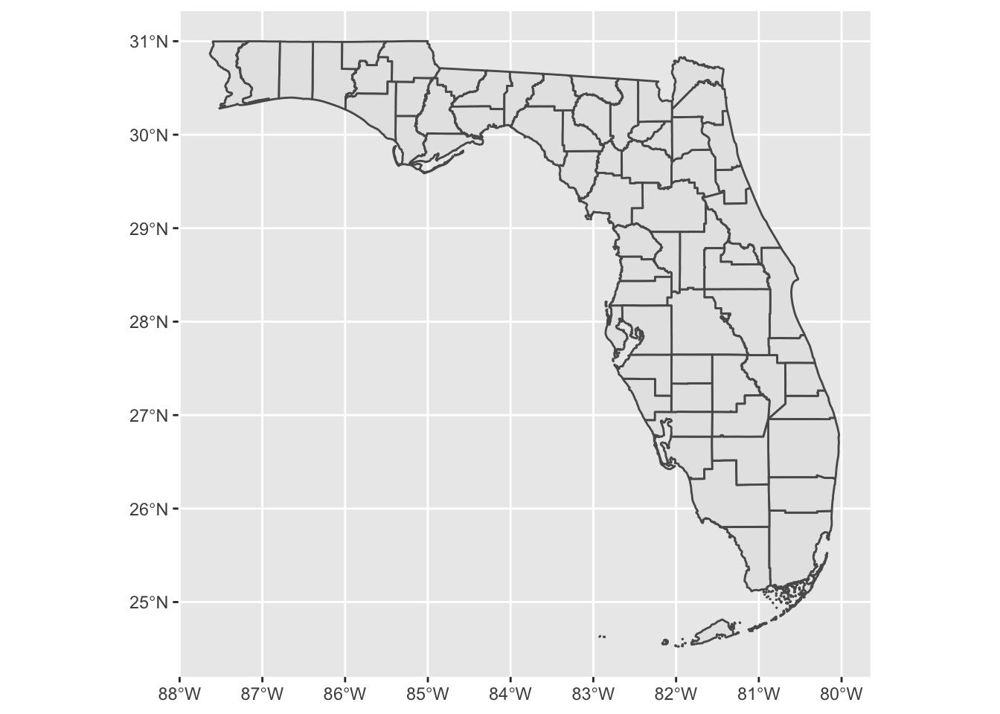
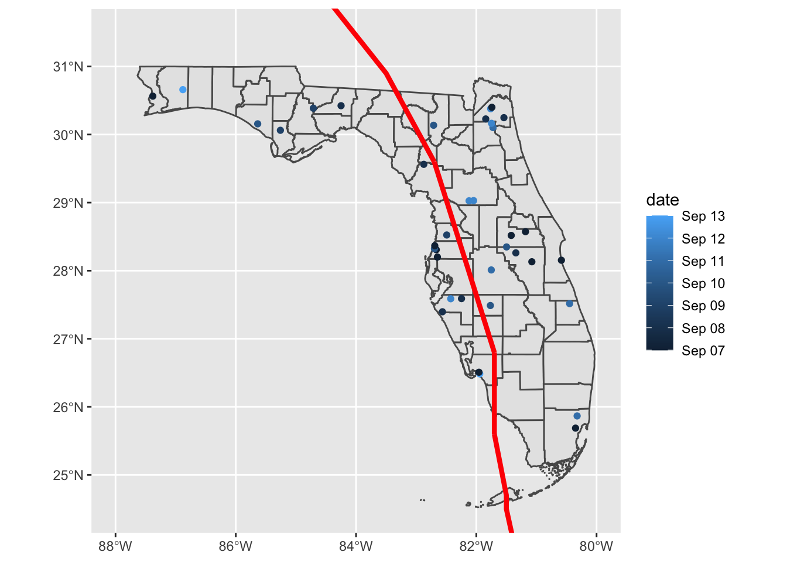

3.2 Basic mapping
If you don’t have ggplot2 still loaded from the exercises in the “Plot” section, you’ll need to
load it. Then, you can create a ggplot object and add an sf layer to it with geom_sf, specifying
the sf data set to plot.24 If you are
running this on a Mac, there’s a chance that you might get an error message about “polygon
edge not found.” There seems to be a bug that’s still being resolved involving the default graphics
driver on Macs with this package. If you get this error message, try fixing it by adding the
following layer to the ggplot code: + theme(axis.text = element_blank(), axis.ticks = element_blank())
Add a coordinate layer (coord_sf) appropriate for a map (otherwise,
you might end up with a map that’s “stretched” out in either the x- or y-direction):

You can add other sf layers to this map, to add points for the location of each fatal accident
and a line for the track of Hurricane Irma. Since the track for Irma began much further south than
Florida and continues north of Florida, you’ll need to set xlim and ylim in the coord_sf call
to ensure that the map is zoomed to show Florida. You can map aesthetics to values in the data, or
to constant values, just like with a regular ggplot object. In this example, the color of each
point is mapped to its date, while the track of Irma is shown in red and a bit larger than the
default size.
ggplot() +
geom_sf(data = fl_counties) +
geom_sf(data = fl_accidents, aes(color = date)) +
geom_sf(data = irma_tracks, color = "red", size = 1.5) +
coord_sf(xlim = c(-88, -80), ylim = c(24.5, 31.5)) 
You can do anything to this map that you would to a regular ggplot object. For example, instead of
using color to show the date of an accident, you could use faceting to add a small map of each date
using facet_wrap. This example code also adds some elements for the plot’s theme, including
changing the background color and taking out the axis ticks and labels.
ggplot() +
geom_sf(data = fl_counties, fill = "antiquewhite") +
geom_sf(data = fl_accidents, color = "darkcyan") +
geom_sf(data = irma_tracks, color = "red") +
coord_sf(xlim = c(-88, -80), ylim = c(24.5, 31.5)) +
facet_wrap(~ date, ncol = 4) +
theme_bw() +
theme(panel.background = element_rect(fill = "aliceblue"),
axis.ticks = element_blank(),
axis.text = element_blank(),
panel.grid = element_line(color = "white", size = 0.8))